Стрит-арт (street art) – это разновидность современного урбанистического искусства. Сложно определить, когда настенные рисунки появились впервые, такое изобразительное искусство является одним из древнейших. Но, несмотря на это, не утихают споры относительно этой деятельности, ведь многие люди считают, что стрит-арт – это акт вандализма. Но, так ли это? Окунемся в мир стрит-арта глубже и попробуем разобраться – что это такое на самом деле.
Виды и стили стрит-арта
28-01-2021
Основные виды граффити
Writing – это один из основных стилей нанесения граффити. Всех художников-граффитистов называют “райтерами”. Это направление можно считать основоположником всех стилей. Здесь нет ограничений или какой-то определенной техники; художник сам определяет для себя в каком стиле ему лучше рисовать.Работы выполненные в этом стиле принято называть скетчами.
Tagging – теггинг (таггинг) используется для обозначения имени и зачастую применяется в качестве подписи к работе. Здесь очень часто применяется техника каллиграфии и смешанные технологии райтинга. Причем, теги можно ставить только под собственными работами, хаотичное нанесение собственной подписи на разные объекты принято относить к вандализму. Теги тоже могут рисоваться от руки или подготавливаться в специальной программе.
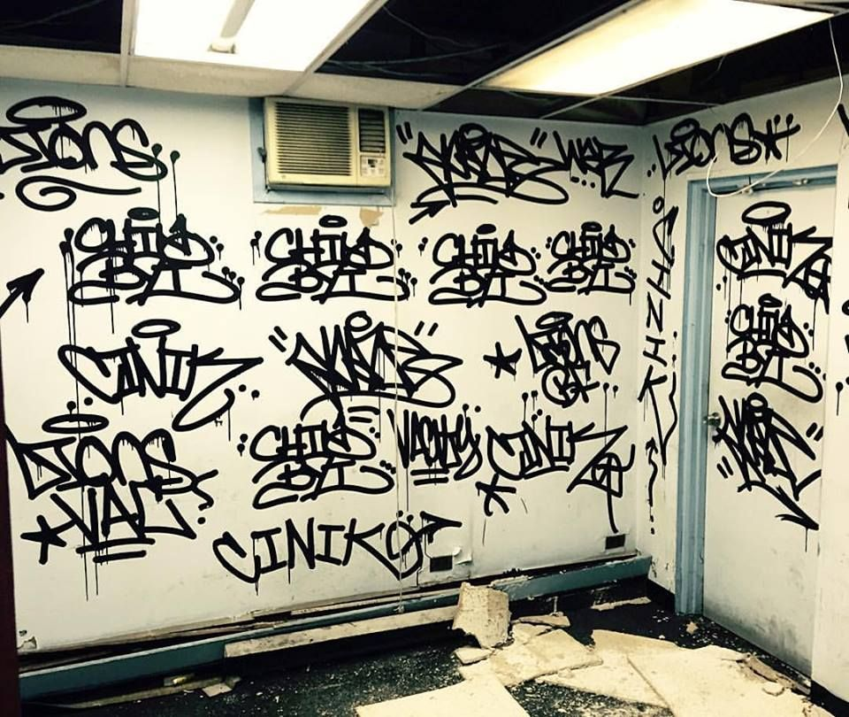
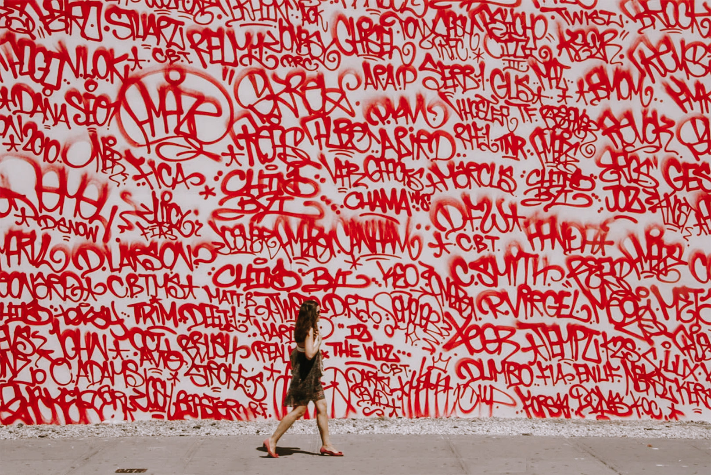
Bombing – это экстремальное направление граффити. Суть этого метода заключается в том, чтобы нарисовать изображение как можно быстрее на движущихся объектах или в опасных условиях. Например, на краю моста или на высоком балконе. Этому стилю свойственно иметь плохую прорисовку мелких деталей, так как у граффитистов не хватает времени и возможности прорабатывать мелкие детали.

Scratching / Scrabbing – подразумевает нанесение изображений посредством царапин. Такая манера исполнения не очень уважается среди райтеров. Такой стиль всегда подразумевает порчу поверхности различных предметов и объектов, и большинство граффитистов сходятся во мнении, что такой стиль не приведет ни к чему достойному
Clean Advertising – это сравнительно новое направление, которое относится к коммерческой деятельности; очередной способ размещения рекламы, а также источник заработка для коммерческих художников.
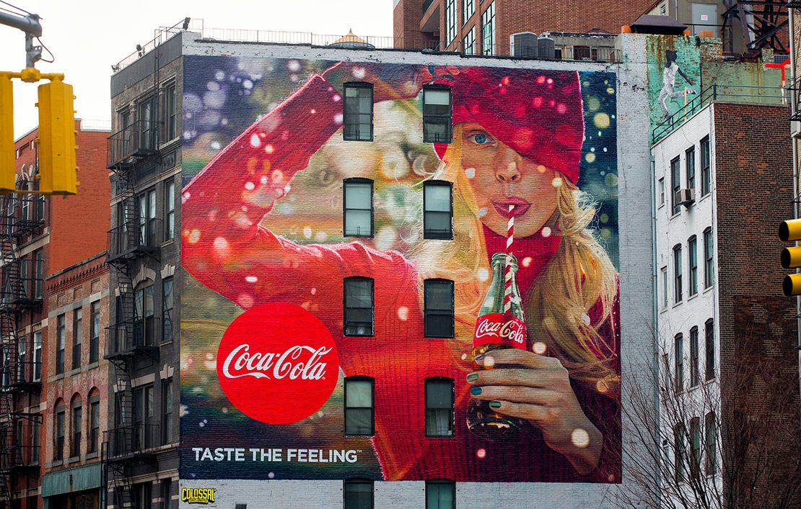
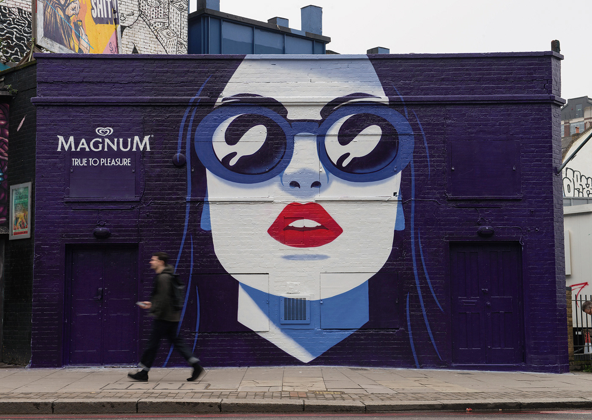
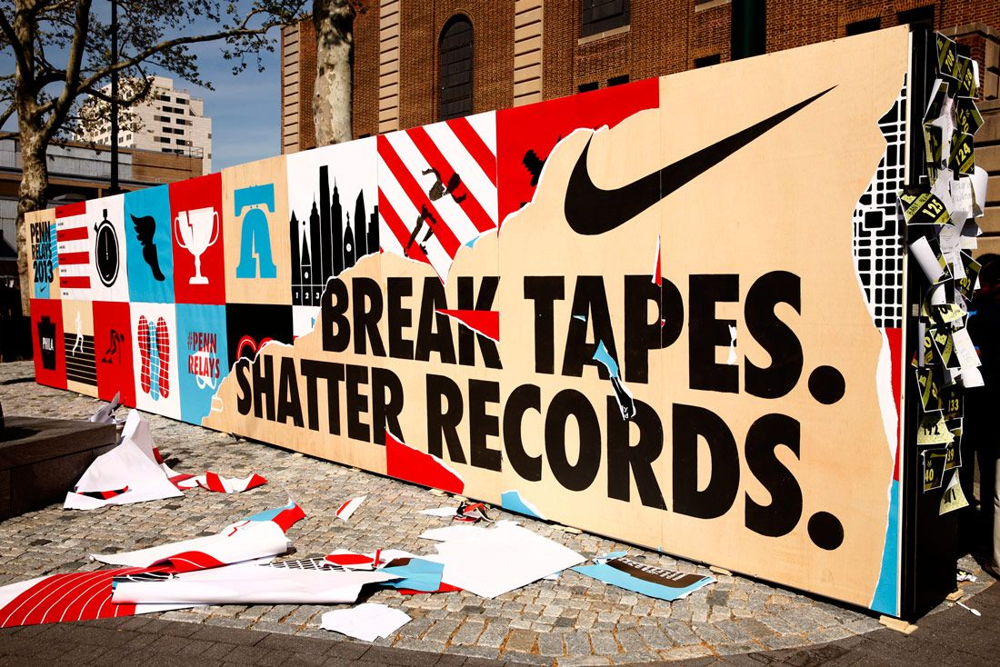
Стили рисования граффити
Bubble Letter – “bubble” в переводе с английского означает “пузырь”. И, как становится ясно из названия, для этого стиля характерны круглые и дутые формы. В таком стиле выполняются примитивные рисунки и создаются слова. Также один из первых видов граффити. При использовании техники Bubble Letter комбинируются два схожих цвета, которые придают рисунку объем.


Throw-up – этот стиль граффити принято относить к одному из самых простых. Впервые он появился в Нью-Йорке. Характерная черта для этого стиля выражается в использовании двух цветов и простых линий. Такие рисунки бывают как правило очень крупными и объемными.


Blockbusters – был придуман в Лос-Анджелесе. Использовался уличными группировками для того, чтобы обозначить свои территории. Ключевая особенность этой манеры рисования заключается в использовании одного или двух цветов. Рисунок при этом должен быть максимально простым и лаконичным, отображать символику авторской группировки.


Characters – нанесение различных персонажей из мультфильмов, известных фильмов и книг. К этому направлению можно причислить и персонажей созданных самостоятельно в иной вселенной, например, в комиксах. Это один из самых сложных стилей, так как он требует художественных навыков. Часто при этой технике используется тонкая игла с краской для прорисовки мелких деталей.


Messiah Style – это направление graffiti было придумано известным райтером из Нью-Йорка по кличке Vulcan. В этом стиле используются буквы с эффектом, похожим на наложение слоев.


Wild Style – один из самых сложных для прочтения стилей. При его создании используется от трёх и более цветов. Зачастую переплетение оказывается настолько сложными, что их могут разобрать только сами авторы. Подготовка такого рисунка занимает достаточно много времени и требует высокого уровня мастерства. Даже после того, как рисунок будет продуман до мельчайших деталей, понадобится большое количество времени для реализации изображения.


Computer Roc Style – авторская идея еще одного исполнителя из Нью-Йорка под псевдонимом Case2. Второе название этого стиля “перел”. Для этого стиля характерно разделение разных фрагментов рисунка и наклонение их в разные стороны.
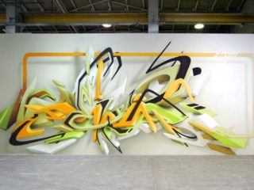
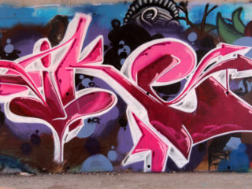
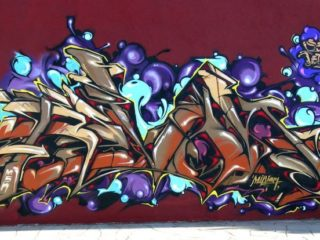
3D / FX Style – одна из новых (сравнительно) разновидностей, которая подразумевает нанесение изображений в формате 3D. Оптические иллюзии очень выгодно выглядят на поверхностях стен; именно по этой причине многие граффитисты создают работы именно в этом стиле.
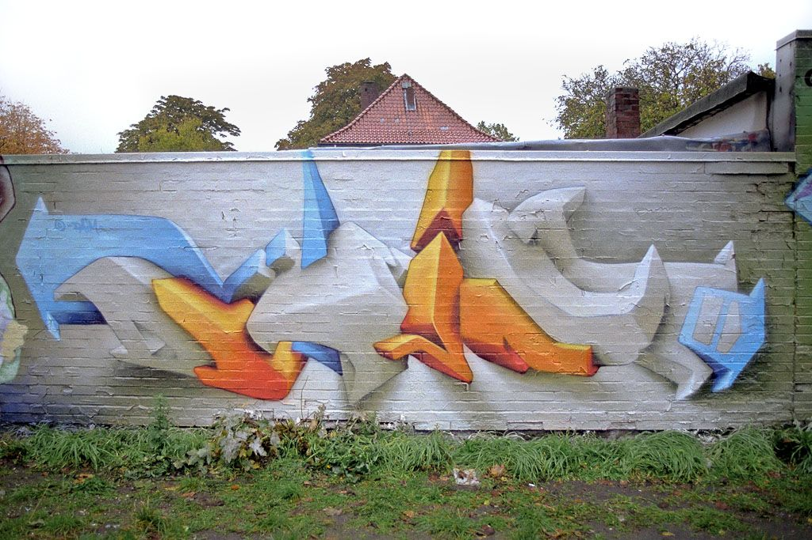
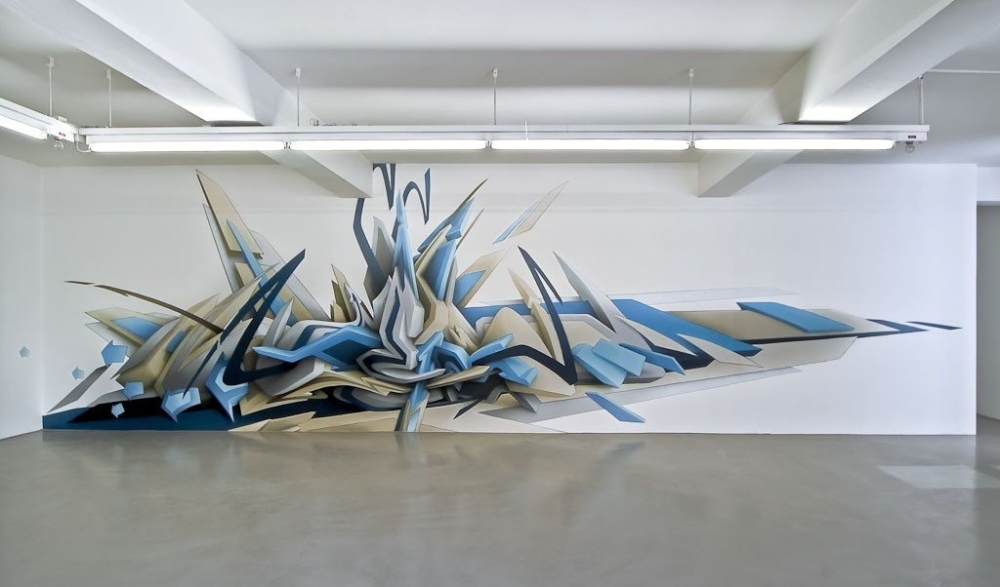
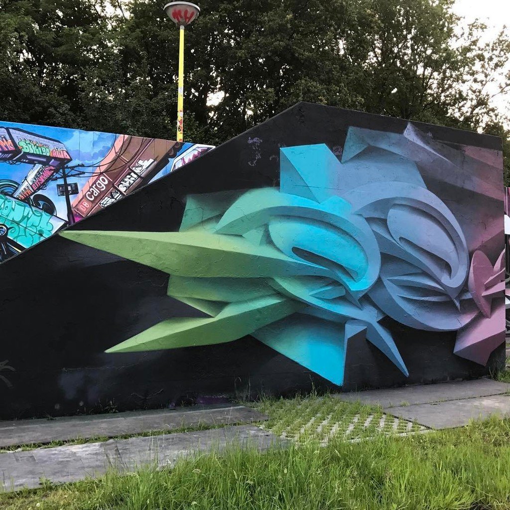
Каждый день разрабатываются новые техники рисования и развитие этого направления искусства не стоит на месте. Возможно, в будущем мы сможем увидеть новую манеру исполнения и самые дерзкие решения.
.png)